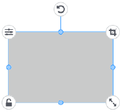
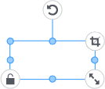
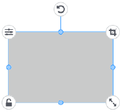

Plantillas específicas para la impresión en color/Plantillas específicas para el corte
Plantillas específicas para la impresión en color/Plantillas específicas para el corte  Plantillas específicas para la impresión en metal/Plantillas específicas para la impresión en lámina
Plantillas específicas para la impresión en metal/Plantillas específicas para la impresión en lámina 
Operaciones de imágenes y caracteres |
Seleccionar
Pinchar (o pulsar) una imagen o un caracter.
Cuando selecciona un objeto se muestra un elemento de interfaz alrededor del mismo.

Mover, deformar, rotar
Plantillas específicas para la impresión en color/Plantillas específicas para el corte
Plantillas específicas para la impresión en metal/Plantillas específicas para la impresión en lámina

 |
: Mueve el objeto. |
| La posición se ajusta automáticamente para alinearse con la parte superior, inferior, izquierda o derecha del otro objeto a mover. Los objetos solo se pueden alinear con el mismo borde (ejemplo: arriba y arriba). Si desea colocar objetos libremente, desactive la casilla «DIRECTRICES». |
|
 |
: Cambia la forma del objeto. |
 |
: Gira el objeto. |
| : Aumenta/disminuye el tamaño del objeto manteniendo la relación de su aspecto. |
 |
: Actívelo cuando no desee cambiar la posición o el tamaño del objeto. |
 |
: Utilice esta opción para ocultar las partes de la imagen que no desea imprimir (solo se muestra para las imágenes). Cuando lo activa, aparece un elemento de la interfaz para recortar alrededor de la imagen.
|
| : Realice ajustes en elementos como el brillo de la imagen y configure los ajustes relacionados con el contorno. (Esto se muestra para los templates específicos para la impresión en metal y para las plantillas específicas para la impresión en lámina) |